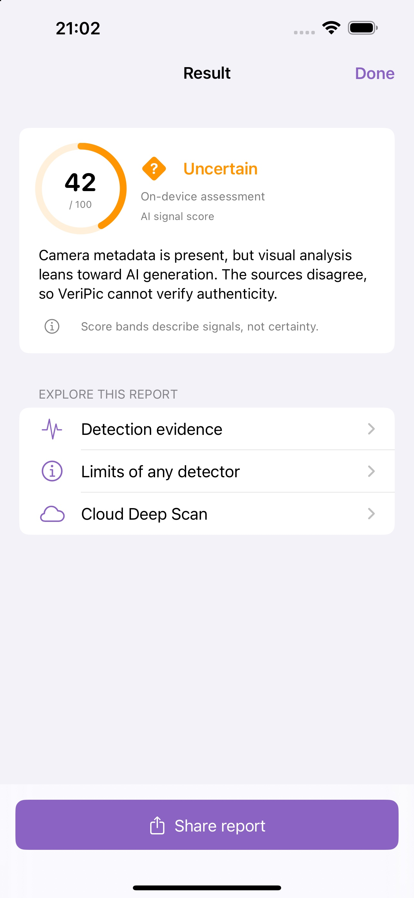

Basic scans run on your device. No account is required to inspect an image.
AI image signals, clearly explained
Look beyond the image.
VeriPic brings file metadata, visual signals and texture indicators into one readable report—so you can discuss an image with context, not guesswork.
Download on the App Store
Built for careful decisions
Signals are useful. They are not proof.
Open the relevant evidence, detector limits and image details in focused views.
Cloud Deep Scan is a separate second opinion and only starts after your consent.